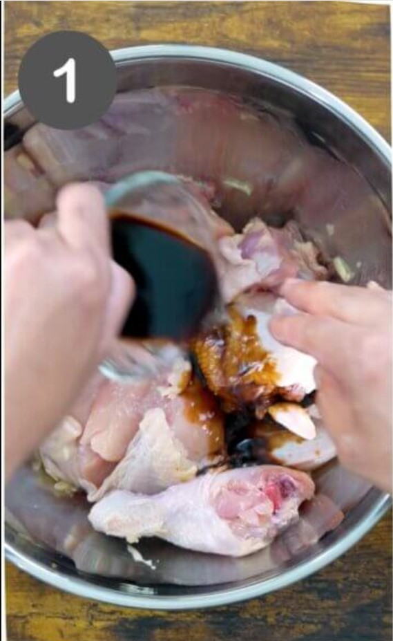
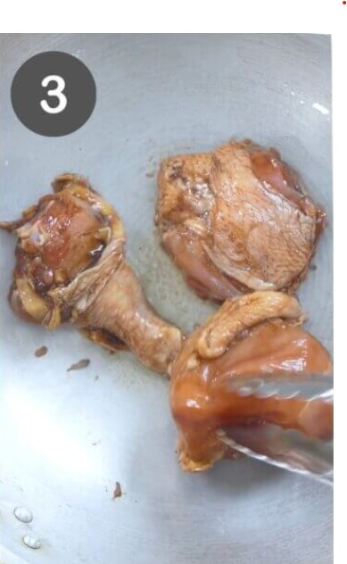

The garlic needs to be crushed for best results. This process takes 1 hour to 12 hours depending on how flavorful you want the dish to be. Sometimes marinating for an hour is not enough. I think that 3 hours is optimal. The chicken absorbs most of the flavors from the soy sauce and garlic during this step. It is noticeable when you taste the dish after cooking. Note that it is also possible to include the vinegar in this step.
Step 2:
Make sure to set the marinade aside because it will be used later on.
Step 3:
Fry for 1 to 1 ½ minutes per side. This will partially cook the outer part. It also makes the skin tough enough to withstand stewing later. This means that it will remain intact, which is nice for presentation.
Step 4:
Let boil. The bay leaves and whole peppercorn can now be added.
Step 5:
It can take a it longer depending on the quality of the chicken. However, feel free to cook longer in low heat for a super tender chicken adobo. Add the vinegar. This can also be added as a part of the marinade. Let it cook for 10 minutes.

Step 6
Add sugar and salt. I only add salt if needed. It is important to taste your dish before adding seasonings. Filipino chicken adobo can be served with or without sauce. If you like it very tasty then continue to cook on an uncovered cooking pot until the liquid